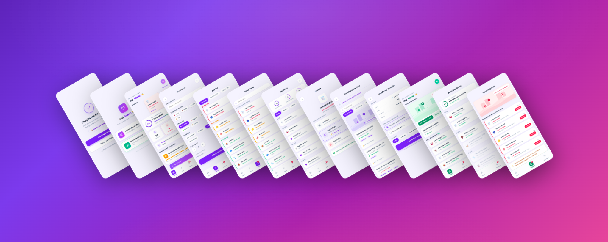

Como utilizei o UX para ajudar as pessoas a organizar o que têm em casa, antecipar o desperdício de alimentos e transformar a doação em um passo natural da rotina.
Como podemos tornar a transição de bens entre quem tem a doar e quem precisa receber mais eficiente e escalável para a ONG?

Na correria do dia a dia e da gestão do lar, as pessoas esquecem do casaco no armário ou da validade da fruta na fruteira. Essa invisibilidade do que está em desuso leva ao desperdício e impede que esses itens cheguem até quem precisa. Resolver isso é crucial para reduzir desperdício, combater a fome e criar uma circulação eficiente e digna de bens entre quem tem e quem precisa. A ONG luta contra a fome ajudando pessoas carentes, contando com a boa vontade de quem tem mais condições. Ela é o middleman dessa negociação e quer uma solução que torne a transição de bens entre os dois públicos mais eficiente e escalável. É desta premissa que nasce o FoodFLow . Boa leitura!
A dificuldade de quem tem a doar chegar até quem precisa receber.
Quem tem bens sobrando (doadores) e quem precisa receber — populações em vulnerabilidade.
Na gestão do lar — quando quem tem sobrando não percebe que o item está em desuso e deixa de repassá-lo.
A falta do básico leva pessoas à miséria. O doador não controla o que tem nem sabe como doar.
Antes de falar com usuários, dados secundários ajudaram a dimensionar a urgência e a relevância social do desafio.
Passe o mouse sobre cada card para expandir os detalhes.
{{ d.main }}
{{ d.rest }}
Analisei concorrentes diretos e indiretos. O achado principal: nenhum permite que uma pessoa física doe seus próprios itens, nem oferece controle doméstico de estoque ou validade.
| Concorrente | Combate ao desperdício | Controle de estoque do usuário | Custo ao usuário | Doação como PF |
|---|---|---|---|---|
| {{ row.name }} | {{ row.desp }} | {{ row.estoque }} | {{ row.custo }} | {{ row.doacao }} |
Insight competitivo: existe um espaço em branco claro — unir gestão doméstica de bens à possibilidade de doação por pessoa física.
Mariana mora com o parceiro · Classe média urbana · Tem ensino superior · Compra em lojas físicas e paga no cartão.
A jornada de doação de alimentos sem o FoodFlow é longa, dependente de esforço próprio e todos as etapas tem pontos de atrito onde a maioria das pessoas desiste e acaba jogando a comida fora. Abaixo o passo a passo do ponto de vista da Mariana, alguém que tem itens em casa e quer doar.
Nota, por acaso, itens parados na despensa ou perto de vencer.
Boa vontade — “podia doar isso”. 🙂
A percepção é aleatória, sem organização.
Forma a intenção de não deixar estragar e repassar o item.
Motivada, com propósito. 😊
A intenção depende de lembrar na hora certa.
Pesquisa ONGs, pergunta a conhecidos, busca no Google.
Dúvida e insegurança sobre o destino. 😕
Informação dispersa; não sabe quem aceita o quê.
Liga, manda mensagem, tenta alinhar horário e local.
Impaciência — processo trabalhoso. 😟
Retorno lento e regras pouco claras.
Teria que separar, embalar e levar até o ponto de coleta.
Cansaço — “não tenho tempo pra isso”. 😣
Esforço alto derruba a boa intenção.
Sem energia para o processo, joga o alimento fora.
Culpa e frustração da intenção perdida. 😞
Comida e dinheiro desperdiçados; a ONG não recebe.
Tornar visível o que está sobrando, na hora certa.
Encurtar a busca com destinos próximos e confiáveis.
Reduzir o esforço de doar a poucos toques no app.
Antes da pesquisa, mapeei o que já era certeza, o que eram suposições e o que ainda gerava dúvida — para direcionar o que precisava ser investigado.
Conduzi uma pesquisa estruturada quantitativa com 26 respondentes para traduzir em números hábitos de compra, controle de validade, gestão financeira e disposição para doar. O público: Pessoas que compram mantimentos para sua casa.
Base: 26 respondentes. Percentuais aproximados conforme análise da pesquisa.
A leitura cruzada dos dados revelou um deslocamento importante do problema.
{{ ins.body }}
O problema não começa na doação — começa na falta de visibilidade e gestão leve dos bens dentro de casa.
A melhor direção não é começar com “doe aqui”, e sim: “te ajudo a lembrar, organizar e decidir o que fazer com o que você já tem” — e a doação entra como desdobramento natural da rotina.
O briefing pedia “um app de doação”. A validação mostrou que a dor real nasce antes — e reposicionou o desafio.
Construir um app de doação que conecte doadores à ONG.
Desenhar um app de organização doméstica com saída inteligente para doação.
Como podemos ajudar a pessoa a enxergar e decidir o que fazer com o que já tem em casa — de forma que doar se torne o passo natural?
As ideias foram priorizadas por impacto x esforço e organizadas no fluxo que guia o usuário da descoberta à recompensa.
Com as funcionalidades priorizadas, mapeei a jornada da nova solução etapa a etapa. Protótipo navegável abaixo — interaja direto na página.
Protótipo interativo incorporado — requer conexão. Abrir em tela cheia ↗
A jornada foi desenhada para guiar o usuário de forma fluida, da invisibilidade do problema até a recompensa pelo bom comportamento:
{{ w.note }}
Wireframes de baixa fidelidade — os dois fluxos completos, do doador (violeta) ao receptor (verde).
As decisões de UI que sustentam o protótipo de alta fidelidade. A cor carrega significado: violeta é a marca e a ação principal, verde é o lado de quem recebe e o “tudo certo”, rosa sinaliza urgência sem pânico e âmbar, atenção.
Toda a interface usa cantos arredondados generosos, cards brancos sobre lavanda e a borda lateral colorida como leitura instantânea de prioridade — o usuário entende o estado de cada item sem ler.
A solução foi construída em alta fidelidade e está navegável. Tudo nasce de uma única decisão na abertura — doar ou receber — que ramifica em dois fluxos espelhados. Abaixo, a navegação real, tela a tela.
Telas reais do protótipo de alta fidelidade. Arraste lateralmente para percorrer cada fluxo.
Os testes de usabilidade estão sendo desenvolvidos neste momento. Em breve eles estarão disponíveis aqui.
Os pães estão assando e em breve estarão prontos!